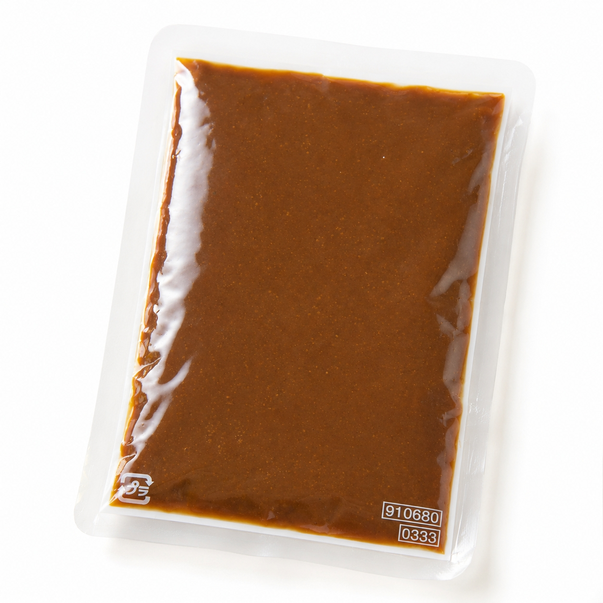

SCENE 01
I028

i 惣菜・加工品
博多味噌もつ鍋スープ
【専門店の味をご家庭で。コクと旨みが凝縮した本格博多味噌もつ鍋。】
- 内容量スープ：200ｇ/ｐ
- 保存常温
- 産地日本
商品の特徴を読む
今夜は家族みんなで、心も体も温まるお鍋はいかがですか。本場博多の味を追求した、特製「博多味噌もつ鍋スープ」があれば、ご家庭の食卓が専門店の味に早変わりします。厳選した味噌をベースに、にんにくの豊かな風味、昆布とかつおの奥深い旨みを絶妙なバランスで溶け込ませました。口に入れた瞬間に広がるまろやかで深いコクは、一度食べたら忘れられない味わいです。調理はとても簡単。お水で希釈してお好みのホルモンやお野菜を入れるだけ。常温で保存できるので、キッチンにストックしておけば、いつでも手軽に本格もつ鍋が楽しめます。もつと野菜の旨みが凝縮したスープでいただく、〆のちゃんぽん麺や雑炊は格別です。このスープ一つで、いつもの食卓が特別なごちそうに変わります。美味しい笑顔が集まる時間をお届けします。
公式サイトへ移動します。価格・在庫・配送条件は移動先で最終確認してください。
SCENE 02
今夜は家族みんなで、心も体も温まるお鍋はいかがですか。
SCENE 03
本場博多の味をご家庭で！コク深くまろやかな「博多味噌もつ鍋スープ」。水で薄めるだけで専門店の味が簡単に再現できます。常温保存可能でストックにも便利。〆のちゃんぽんや雑炊まで絶品の美味しさです。お好みの具材で本格もつ鍋をお楽しみください。
PRODUCT INFORMATION
購入前に確認したい商品情報
- 商品名
- 博多味噌もつ鍋スープ
- 商品規格
- スープ：200ｇ/ｐ
- 保存方法
- 常温
- 原産国
- 日本
- 製造地
- 日本
- 賞味期限
- 発送日より3ヶ月
原材料
みそ、本みりん、還元水あめ、にんにく、食塩、こんぶエキス、かつおエキス、酵母エキス／調味料（アミノ酸等）、酸化防止剤（ビタミンC）、カラメル色素、増粘剤（キサンタン）、甘味料（カンゾウ）、（一部に大豆を含む）
FAQ
購入前のよくあるご質問
1袋で何人前ですか？
1袋200gを600ccのお水で希釈していただき、2〜3人前が目安となります。加えるお野菜の量などでお好みの濃さに調整いただけます。
保存方法について教えてください。
未開封の状態でしたら直射日光を避け、常温で保存いただけます。開封後はお早めにお召し上がりください。長期間保管される場合は、冷凍保存を推奨しております。
MEAT PLUS OFFICIAL SHOP
【専門店の味をご家庭で。コクと旨みが凝縮した本格博多味噌もつ鍋。】
仕入れ・加工・梱包・発送まで自社で行うMEAT PLUSの公式オンラインショップでご注文いただけます。
公式オンラインショップで購入する